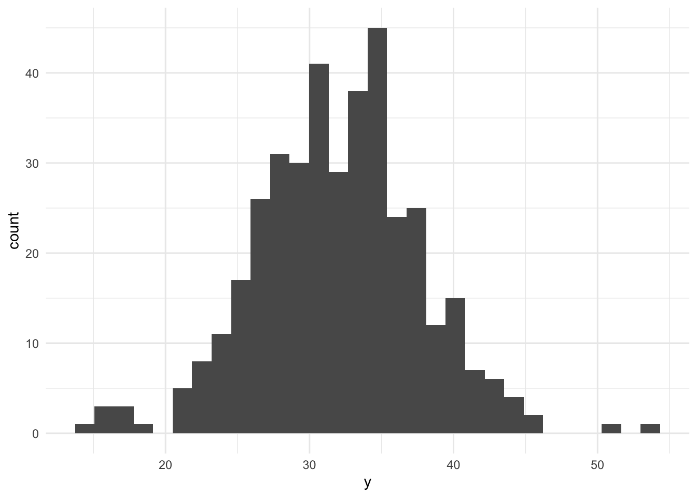
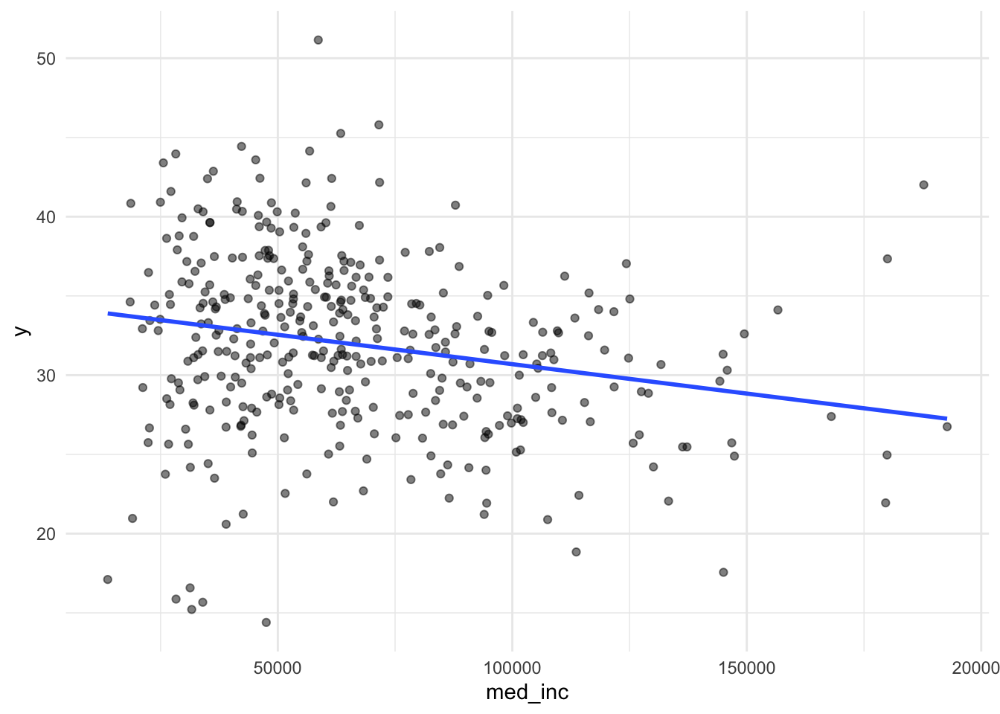
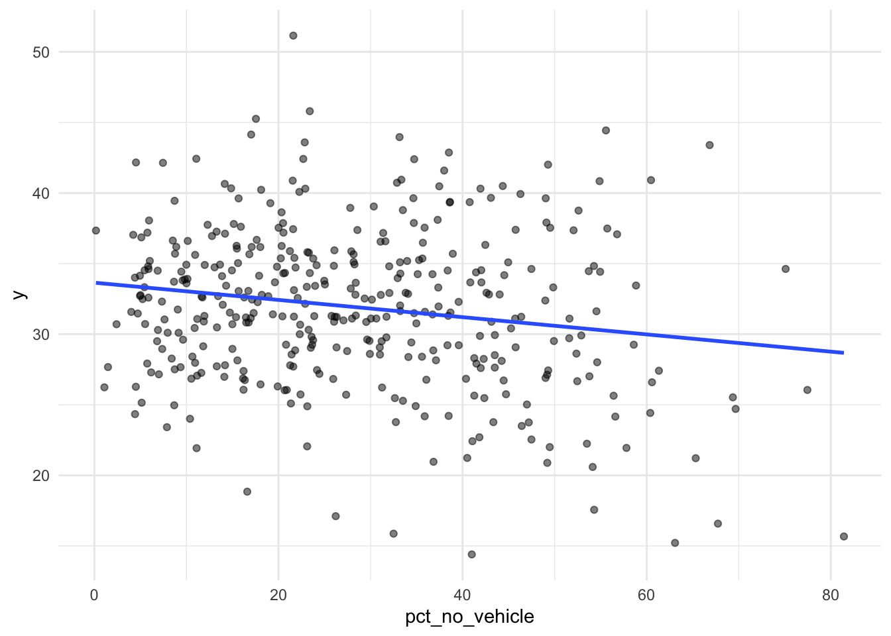
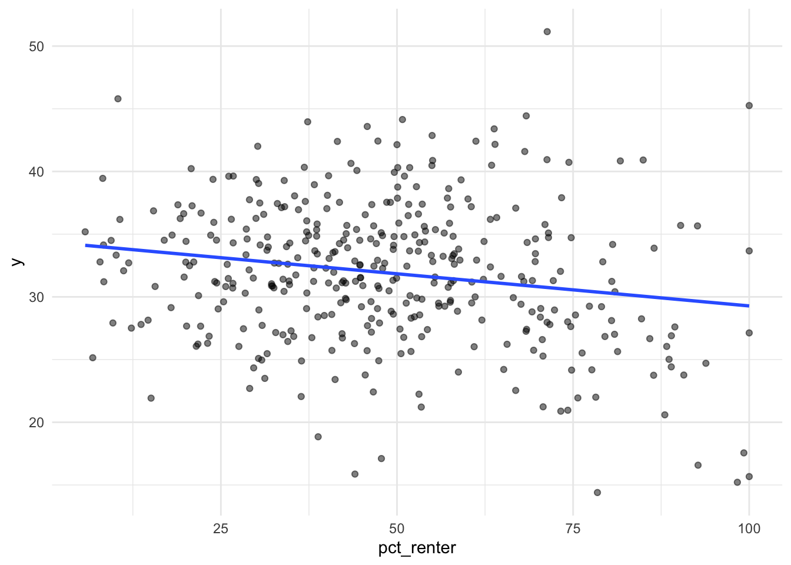
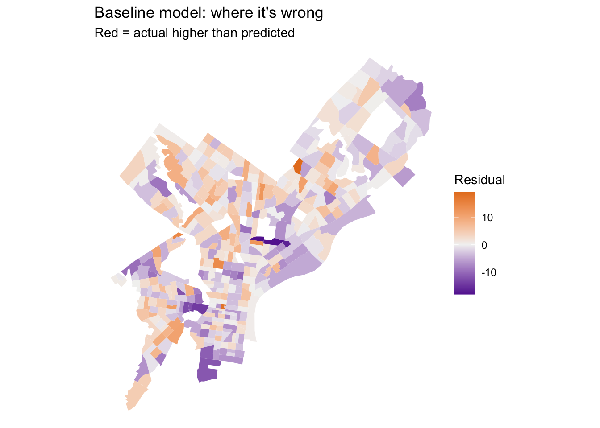
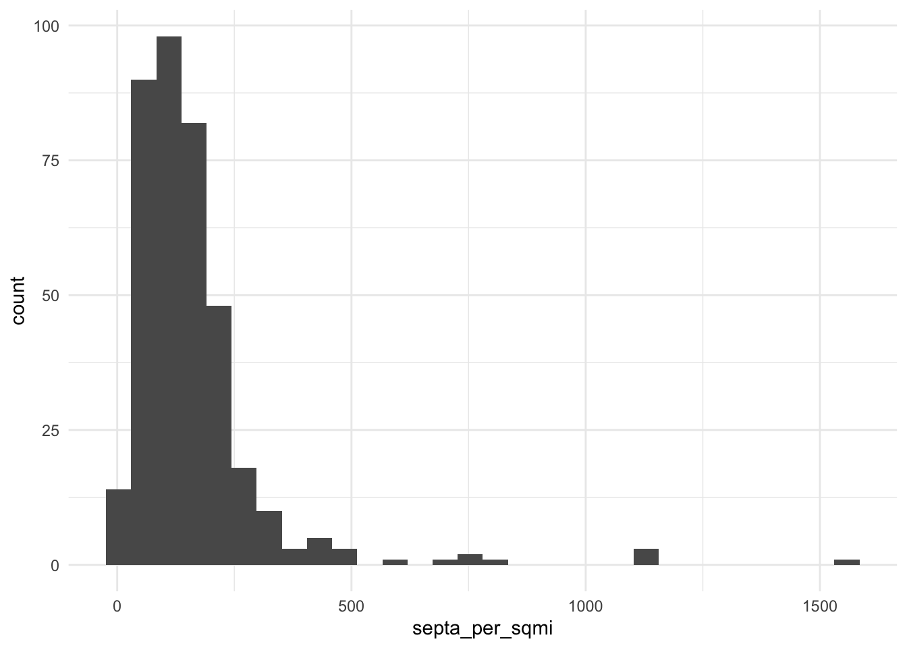
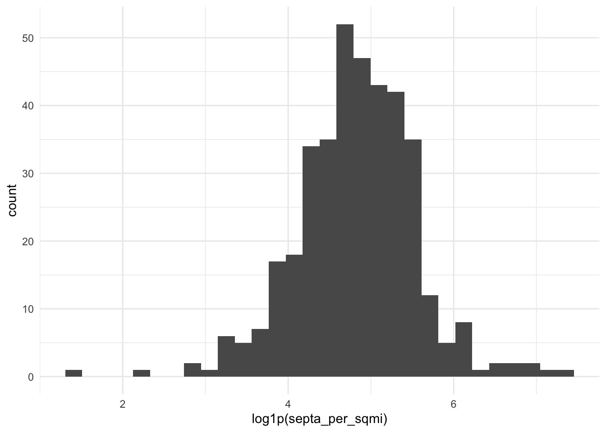
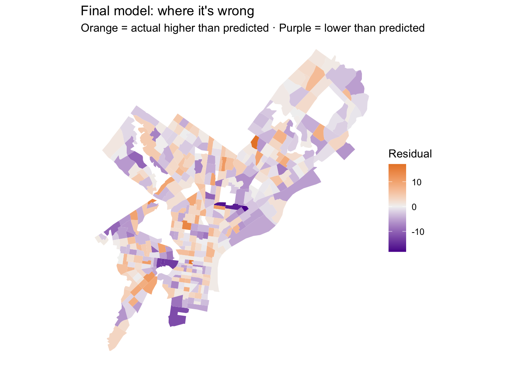
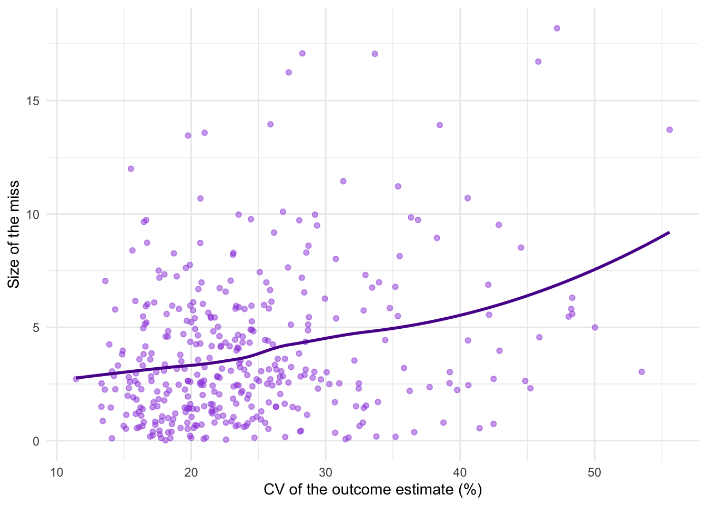

Code
library(tidyverse)
library(tidycensus)
library(sf)
library(caret)
options(readr.show_progress = FALSE)
options(tigris_use_cache = TRUE)
Sys.getenv("CENSUS_API_KEY") != ""[1] TRUEMUSA 5080 · Integrates Weeks 1–5 · Due Friday, October 16
Frankie Zheng
October 15, 2026
This is not a competition. There’s no leaderboard and no target RMSE. The goal is to practice the full prediction workflow on a question you choose, and to find out what actually helps. Some features you’re sure will help won’t, and some you add on a whim will. Both are findings.
You’ll:
Timing. Parts 1–4 use only what we’ve covered through Week 5. You can finish them before the October 9 lecture. Part 5 is new material; the lecture explains it, and the instructions below give you the essentials.
Type the code yourself. The worked examples show the pattern. Your job is to apply it to your outcome and your data choices.
Every model is cross-validated on the same tracts with the same folds, so the rows in your model log are comparable. If a new variable has missing values, fill them (for example, 0 for a count, or the median with a note) or choose a different variable. The cv_rmse() helper below will stop and tell you if you break this rule.
Your outcome comes from the 2019–2023 ACS. Pull open data from 2023 or earlier (2021–2023 is ideal). Using 2025 data to predict a 2023 outcome uses information from the future, which a real prediction model would never have.
Don’t use any variable that’s built from your outcome or measures the same thing another way. Ask yourself: would an agency trying to predict this outcome for a tract have this variable? If the answer is “only because it’s basically the outcome,” leave it out.
[1] TRUEThis function runs 10-fold cross-validation with the same seed every time, so every model in your log is tested on the same folds. You don’t need to change it. Read it once so you know what it does.
ctrl <- trainControl(method = "cv", number = 10)
cv_rmse <- function(formula, data) {
df <- if (inherits(data, "sf")) st_drop_geometry(data) else data
vars <- all.vars(formula)
bad <- vars[sapply(vars, function(v) any(is.na(df[[v]])))]
if (length(bad) > 0) {
stop("These variables have NAs: ", paste(bad, collapse = ", "),
". Fill them or choose another variable (Rule 1: don't drop rows).")
}
set.seed(5080)
fit <- train(formula, data = df, method = "lm", trControl = ctrl)
fit$results$RMSE
}Every time you fit a new model, add a row. By the end, this table is the story of your assignment.
Pick a tract-level ACS variable for Philadelphia that matters for policy. Two outcomes are off limits: median gross rent (we did it in lab) and median home value (save it for A4).
Some ideas if you’re stuck:
| Outcome | Why an agency might care | ACS table |
|---|---|---|
| % of households with no vehicle | Transit planning | B08201 or B25044 |
| Mean travel time to work | Access to jobs | B08013_001 ÷ B08303_001 |
| % of people below poverty | Targeting services | B17001 |
| % of housing units vacant | Housing and blight | B25002 |
| % of households overcrowded | Housing conditions | B25014 |
Use load_variables(2023, "acs5") to browse and find exact variable codes.
Choose three to five ACS predictors for your baseline model. They should be things that plausibly relate to your outcome, but none of them may be built from your outcome (Rule 3).
philly_tracts <- get_acs(
geography = "tract",
state = "PA",
county = "Philadelphia",
variables = c(
total_pop = "B01003_001",
# your outcome's numerator and denominator (or median), e.g.:
travel_min = "B08013_001",
workers = "B08303_001",
# your baseline predictors, e.g.:
med_inc = "B19013_001",
novehicle = "B08201_002",
households = "B08201_001",
pct_renter_num = "B25003_003",
pct_renter_den = "B25003_001"
),
year = 2023,
output = "wide",
geometry = TRUE,
cache_table = TRUE
) %>%
st_transform(2272)philly_tracts <- philly_tracts %>%
mutate(
# ---- outcome: mean travel time (minutes) ----
y = travel_minE / workersE,
# ---- reliability of the outcome ----
y_moe = tidycensus::moe_ratio(
num = travel_minE,
denom = workersE,
moe_num = travel_minM,
moe_denom = workersM
),
y_cv = (y_moe / 1.645) / y * 100,
# ---- baseline predictors ----
med_inc = med_incE,
pct_no_vehicle = novehicleE / householdsE * 100,
pct_renter = pct_renter_numE / pct_renter_denE * 100
)Before you commit, check three things.
[1] 22 Min. 1st Qu. Median Mean 3rd Qu. Max. NAs
11.44 18.73 22.57 24.41 27.84 55.58 22 reliability n
1 High 1
2 Low 47
3 Moderate 360
If more than about a third of tracts have low reliability, consider a different outcome, or one built from larger counts. Write your reasoning either way.
Answer (2–3 sentences): What is your outcome, why would an agency want to predict it, and how reliable is it?
Your answer: My outcome is the average travel time to work (in minutes), which a transportation agency would want to predict in order to identify neighborhoods with poor job access or inadequate transit.
The outcome is reliable enough to model: the median CV is 22.57%, and 361 of 408 valid tracts (88%) fall into the High or Moderate reliability categories.
Since only 47 tracts (11.5%) are in the Low reliability group—well below the one-third threshold—I will keep this outcome.
Filter once, here, and never again. Every later step uses tracts.
[1] 408[1] 380Answer: How many tracts did you lose, and what kinds of places are they?
Your answer:I lost 28 tracts.These places may be zero-population or special-use tracts — such as the airport, industrial zones, parks, or institutional land — where no households or workers live.
Plot your outcome against each predictor before modeling (the Week 3 habit).



Call:
lm(formula = f1, data = tracts)
Residuals:
Min 1Q Median 3Q Max
-18.0550 -3.1230 0.0856 2.9936 19.1256
Coefficients:
Estimate Std. Error t value Pr(>|t|)
(Intercept) 3.958e+01 1.048e+00 37.766 < 2e-16 ***
med_inc -5.616e-05 8.744e-06 -6.423 4.04e-10 ***
pct_no_vehicle -7.483e-02 2.166e-02 -3.454 0.000615 ***
pct_renter -3.706e-02 1.665e-02 -2.226 0.026612 *
---
Signif. codes: 0 '***' 0.001 '**' 0.01 '*' 0.05 '.' 0.1 ' ' 1
Residual standard error: 5.231 on 376 degrees of freedom
Multiple R-squared: 0.1359, Adjusted R-squared: 0.129
F-statistic: 19.72 on 3 and 376 DF, p-value: 6.857e-12# A tibble: 1 × 4
model added cv_rmse notes
<chr> <chr> <dbl> <chr>
1 m1 ACS baseline 5.22 income, no-vehicle share, renter shareWrite the CV RMSE as a sentence, in your outcome’s units: “On tracts it hasn’t seen, the baseline model misses by about ___.”
Save this map. You’ll compare it to your final model’s map in Part 6.
tracts <- tracts %>% mutate(resid_m1 = residuals(m1))
ggplot(tracts) +
geom_sf(aes(fill = resid_m1), color = NA) +
scale_fill_gradient2(low = "#5A189A", mid = "grey95", high = "#E67E22", midpoint = 0) +
theme_void() +
labs(title = "Baseline model: where it's wrong",
subtitle = "Red = actual higher than predicted",
fill = "Residual")
Answer: Where do the residuals cluster? What might those places have in common that your model doesn’t know about? Use this answer to choose your open data layers in Part 3.
Your answer: Where do the residuals cluster? Negative residuals (purple) cluster in Center City and University City; positive residuals (orange) cluster in North, West, and Northeast Philadelphia.
What don’t they know? The model lacks spatial location and transit data. Core areas are close to jobs (shorter commutes); outer areas are isolated from jobs (longer commutes).
Many of the city’s datasets on OpenDataPhilly are served through a Carto SQL API. You send a SQL query in a URL, and it sends back data. Ask for format=GeoJSON and st_read() reads the result directly, just like the Indego feed in Week 4.
The pattern:
https://phl.carto.com/api/v2/sql?format=GeoJSON&q=SELECT ... FROM table_name WHERE ...Three pieces of SQL are all you need:
SELECT the_geom, column1, column2 chooses which columns come back. Always include the_geom, or you get no geometry.FROM table_name chooses the dataset.WHERE ... filters rows. Filter in the query, not in R. Some tables have millions of rows, and pulling everything will be slow or fail.This helper builds the URL for you. Spaces and symbols in a URL need encoding, and URLencode() handles that.
On a dataset’s OpenDataPhilly page, look for the API link. The table name is the word after FROM in the example query. To see what values a column takes before you filter on it, ask for a count in CSV format:
# What kinds of crime are in the incidents table in 2023?
url <- paste0("https://phl.carto.com/api/v2/sql?format=csv&q=",
URLencode("SELECT text_general_code, COUNT(*) AS n
FROM incidents_part1_part2
WHERE dispatch_date >= '2023-01-01' AND dispatch_date < '2024-01-01'
GROUP BY text_general_code ORDER BY n DESC"))
read_csv(url)# A tibble: 32 × 2
text_general_code n
<chr> <dbl>
1 Thefts 37054
2 Other Assaults 25986
3 Motor Vehicle Theft 22478
4 Vandalism/Criminal Mischief 17346
5 All Other Offenses 13334
6 Theft from Vehicle 13002
7 Fraud 7661
8 Aggravated Assault No Firearm 5134
9 Burglary Residential 3800
10 Aggravated Assault Firearm 3320
# ℹ 22 more rowsburglary <- carto_get(
"SELECT the_geom, text_general_code, dispatch_date
FROM incidents_part1_part2
WHERE dispatch_date >= '2023-01-01' AND dispatch_date < '2024-01-01'
AND text_general_code = 'Burglary Residential'"
) %>%
st_transform(st_crs(tracts)) # Carto returns EPSG 4326; translate immediately
nrow(burglary)[1] 3800Some records have no location. Drop them with filter(!st_is_empty(burglary)), and count how many you lost. Every point you drop is a point that won’t be counted.
These tables were available on Carto as of this fall. If a query fails, check the dataset’s OpenDataPhilly page for the current table name.
| Data | Table | Filter on | Notes |
|---|---|---|---|
| Crime incidents | incidents_part1_part2 |
dispatch_date, text_general_code |
Pick specific offense types |
| Shooting victims | shootings |
date_ |
Small enough to pull several years |
| 311 requests | public_cases_fc |
requested_datetime, service_name |
Use the count query above to see service names |
| Indego stations | (not Carto) https://www.rideindego.com/stations/json/ |
— | The Week 4 feed |
Datasets not on Carto often have a GeoJSON download link on their OpenDataPhilly page. st_read() reads those URLs too. For example, navigage to https://opendataphilly.org/, find a dataset that you’d like to import. I found city landmarks. On the page there is a link to a GeoJSON file. I simply right-clicked on that hyperlink and copied it and then used st_read() and pasted the link:
landmarks <- st_read(“https://hub.arcgis.com/api/v3/datasets/6b2fe4a0fbe14e0a8e6afceaea230b8e_0/downloads/data?format=geojson&spatialRefId=4326&where=1%3D1”)
Pull at least two layers that you think relate to your outcome. Base your choice on your Part 2C answer.
Reading layer `OGRGeoJSON' from data source
`https://arcgis.dvrpc.org/portal/rest/services/transportation/septa_transitstops/MapServer/0/query?where=1%3D1&outFields=*&f=geojson'
using driver `GeoJSON'
Simple feature collection with 22478 features and 11 fields
Geometry type: POINT
Dimension: XY
Bounding box: xmin: -75.83469 ymin: 39.80381 xmax: -74.7542 ymax: 40.33401
Geodetic CRS: WGS 84[1] 321[1] 22478Answer: Why these layers? What do you expect them to capture that the ACS variables don’t?
Your answer:I chose SEPTA and Indego stations because they directly measure transit accessibility, which the ACS variables lack. They should capture how physical infrastructure affects commute times — for example, proximity to stations explains why Center City tracts have shorter commutes while outer tracts have longer ones.
Every feature below reuses a Week 4 tool. The worked examples use burglaries and Indego stations; you build the same types from your own layers.
How many burglaries fall in each tract?
Min. 1st Qu. Median Mean 3rd Qu. Max.
4.00 17.75 28.00 35.13 46.00 183.00 Min. 1st Qu. Median Mean 3rd Qu. Max.
0.0000 0.0000 0.0000 0.7789 1.0000 7.0000 A tract with no burglaries gets 0, not NA, so Rule 1 is safe.
Raw counts mostly measure tract size. A big tract has more of everything. Normalize by area, by population, or by housing units, depending on what makes sense for the thing you’re counting.
If a tract has 40 residents and 3 burglaries, its rate is 75 per 1,000, which is a huge number built on tiny counts. Look at the tracts with the highest per-capita rates before you trust them. This is the Week 3 lesson about small denominators again.
How far is each tract from its nearest Indego station? Use the Week 4 pattern: find the nearest feature, then measure to it element by element.
stations <- st_read("https://www.rideindego.com/stations/json/", quiet = TRUE) %>%
st_transform(st_crs(tracts))
tract_pts <- st_point_on_surface(tracts) # always inside the tract, unlike a centroid
nearest_idx_indego <- st_nearest_feature(tract_pts, layer1)
tracts <- tracts %>%
mutate(dist_indego_mi = as.numeric(
st_distance(tract_pts, layer1[nearest_idx_indego, ], by_element = TRUE)) / 5280)
nearest_idx_septa <- st_nearest_feature(tract_pts, layer2)
tracts <- tracts %>%
mutate(dist_septa_mi = as.numeric(
st_distance(tract_pts, layer2[nearest_idx_septa, ], by_element = TRUE)) / 5280)Sometimes the “thing” is a single location, such as City Hall as a stand-in for the center of the regional economy.
Build at least three spatial features from your own layers, and use at least two types (count, density, nearest distance, distance to a place). After each one, fit a model, cross-validate it, and log it.
f2 <- y ~ med_inc + pct_no_vehicle + pct_renter + septa_per_sqmi
model_log <- model_log %>%
add_row(model = "m2", added = "SEPTA density",
cv_rmse = cv_rmse(f2, tracts),
notes = "spatial feature")
f3 <- y ~ med_inc + pct_no_vehicle + pct_renter + dist_indego_mi
model_log <- model_log %>%
add_row(model = "m3", added = "Indego nearest distance",
cv_rmse = cv_rmse(f3, tracts),
notes = "spatial feature")
f4 <- y ~ med_inc + pct_no_vehicle + pct_renter + dist_ch_mi
model_log <- model_log %>%
add_row(model = "m4", added = "Distance to City Hall",
cv_rmse = cv_rmse(f4, tracts),
notes = "spatial feature")
model_log# A tibble: 4 × 4
model added cv_rmse notes
<chr> <chr> <dbl> <chr>
1 m1 ACS baseline 5.22 income, no-vehicle share, renter share
2 m2 SEPTA density 5.27 spatial feature
3 m3 Indego nearest distance 5.23 spatial feature
4 m4 Distance to City Hall 5.17 spatial feature Answer: Which spatial feature helped most? Did any feature you expected to help do nothing, or make CV RMSE worse? Why might that be?
Your answer:Distance to City Hall helped the most, lowering CV RMSE from 5.22 to 5.17. SEPTA density and Indego distance did not help (5.27 and 5.23), likely because they measure infrastructure presence rather than actual travel speed, and they overlap with existing central-city variables. City Hall distance directly captures geographic location, making it the strongest predictor.
Watch the October 9 recorded lecture before you start this part. Below is a summary to work from.
So far, every predictor has entered the model as a straight line: each additional unit of X changes predicted Y by the same amount, everywhere. Transformations let the model bend. For prediction, the question is simply does the bend lower CV RMSE? For interpretation, each transformation changes what a coefficient means, so you need to know how to read it.
Keep your outcome y untransformed in this assignment. If you model log(y), your CV RMSE comes out in log units and can’t be compared to the other rows in your log. (Predicting a logged outcome well requires back-transforming, which is an A4 topic.)
Many urban variables are skewed: a few tracts have huge values, and most have small ones. Income, density, and counts are typical. A log compresses the long tail, so a model can use the difference between 1 and 10 as well as the difference between 100 and 1,000.


log(0) is -Inf, and it will break your model. Counts and densities often include zeros. Use log1p(x), which computes log(x + 1), for anything that can be 0.
Reading the coefficient: when a predictor is logged, a 1% increase in X goes with a change of about β/100 in Y, in Y’s units. With log1p, this reading is approximate for small values of X.
If your scatterplot bends (rising and then flattening, or falling and then rising), a squared term lets the line curve. Write it with I(), which tells R to do the arithmetic rather than read ^ as formula syntax.
Call:
lm(formula = y ~ dist_ch_mi + I(dist_ch_mi^2), data = tracts)
Residuals:
Min 1Q Median 3Q Max
-18.5194 -3.0884 -0.0491 2.9256 16.3693
Coefficients:
Estimate Std. Error t value Pr(>|t|)
(Intercept) 25.87577 0.69995 36.968 < 2e-16 ***
dist_ch_mi 2.10433 0.25419 8.279 2.19e-15 ***
I(dist_ch_mi^2) -0.12422 0.01908 -6.511 2.39e-10 ***
---
Signif. codes: 0 '***' 0.001 '**' 0.01 '*' 0.05 '.' 0.1 ' ' 1
Residual standard error: 5.054 on 377 degrees of freedom
Multiple R-squared: 0.1911, Adjusted R-squared: 0.1868
F-statistic: 44.54 on 2 and 377 DF, p-value: < 2.2e-16Reading the coefficient: you can’t read either coefficient alone anymore. The effect of X depends on where you are along X. A positive linear term with a negative squared term means Y rises with X and then levels off or turns down. Plot the fitted curve to see it:
Sometimes a number works better as groups, either because the relationship isn’t smooth or because the categories are meaningful. You can make categories from any variable with case_when() or cut(), and then make sure R treats them as a factor.
ring n
1 Core 79
2 Inner 134
3 Outer 167
Call:
lm(formula = y ~ ring, data = tracts)
Residuals:
Min 1Q Median 3Q Max
-17.5146 -3.2886 -0.1537 3.1284 17.1430
Coefficients:
Estimate Std. Error t value Pr(>|t|)
(Intercept) 27.5537 0.5699 48.349 < 2e-16 ***
ringInner 4.3575 0.7185 6.065 3.21e-09 ***
ringOuter 6.4529 0.6917 9.329 < 2e-16 ***
---
Signif. codes: 0 '***' 0.001 '**' 0.01 '*' 0.05 '.' 0.1 ' ' 1
Residual standard error: 5.065 on 377 degrees of freedom
Multiple R-squared: 0.1876, Adjusted R-squared: 0.1833
F-statistic: 43.52 on 2 and 377 DF, p-value: < 2.2e-16Reading the coefficients: R turns a factor with k categories into k − 1 dummy variables. The category left out is the reference level (here, “Core,” the first level). Each coefficient is the difference from the reference: ringOuter is how much higher or lower predicted Y is in outer tracts compared to core tracts, holding everything else in the model constant. To change the reference, use relevel(ring, ref = "Outer").
If a category has only a handful of tracts, its coefficient is unstable, and in cross-validation some folds may not contain it at all. Aim for at least 20 tracts per category.
Try at least one of each: a log, a squared term, and a categorical variable. Choose which variables to transform based on your plots, not at random. Log each model.
f_log <- y ~ med_inc + pct_no_vehicle + pct_renter + log1p(septa_per_sqmi)
model_log <- model_log %>%
add_row(model = "m_log", added = "log(SEPTA density)",
cv_rmse = cv_rmse(f_log, tracts),
notes = "transformation")
f_sq <- y ~ med_inc + pct_no_vehicle + pct_renter + dist_ch_mi + I(dist_ch_mi^2)
model_log <- model_log %>%
add_row(model = "m_sq", added = "squared distance",
cv_rmse = cv_rmse(f_sq, tracts),
notes = "transformation")
f_cat <- y ~ med_inc + pct_no_vehicle + pct_renter + ring
model_log <- model_log %>%
add_row(model = "m_cat", added = "ring category",
cv_rmse = cv_rmse(f_cat, tracts),
notes = "transformation")
model_log# A tibble: 7 × 4
model added cv_rmse notes
<chr> <chr> <dbl> <chr>
1 m1 ACS baseline 5.22 income, no-vehicle share, renter share
2 m2 SEPTA density 5.27 spatial feature
3 m3 Indego nearest distance 5.23 spatial feature
4 m4 Distance to City Hall 5.17 spatial feature
5 m_log log(SEPTA density) 5.25 transformation
6 m_sq squared distance 5.03 transformation
7 m_cat ring category 5.05 transformation Answer: Which transformation helped most? For your categorical variable, write one sentence reading one of its coefficients correctly, naming the reference level.
Your answer: The squared distance transformation helped the most, lowering CV RMSE from 5.22 to 5.03. Holding income, vehicle ownership, and renter share constant, tracts in the Outer ring have a predicted commute time that is 5.43 minutes longer than tracts in the Core ring.
Combine the features and transformations that earned their place, judged by CV RMSE, not p-values.
Call:
lm(formula = f_final, data = tracts)
Residuals:
Min 1Q Median 3Q Max
-18.1848 -3.0344 -0.0787 2.8398 17.0776
Coefficients:
Estimate Std. Error t value Pr(>|t|)
(Intercept) 2.858e+01 2.237e+00 12.775 < 2e-16 ***
med_inc -1.820e-05 1.084e-05 -1.679 0.094 .
pct_no_vehicle 9.168e-03 2.694e-02 0.340 0.734
pct_renter -2.095e-02 1.631e-02 -1.285 0.200
dist_ch_mi 1.819e+00 3.373e-01 5.393 1.23e-07 ***
I(dist_ch_mi^2) -1.050e-01 2.246e-02 -4.675 4.11e-06 ***
---
Signif. codes: 0 '***' 0.001 '**' 0.01 '*' 0.05 '.' 0.1 ' ' 1
Residual standard error: 5.04 on 374 degrees of freedom
Multiple R-squared: 0.202, Adjusted R-squared: 0.1913
F-statistic: 18.94 on 5 and 374 DF, p-value: < 2.2e-16# A tibble: 8 × 4
model added cv_rmse notes
<chr> <chr> <dbl> <chr>
1 m1 ACS baseline 5.22 income, no-vehicle share, renter share
2 m2 SEPTA density 5.27 spatial feature
3 m3 Indego nearest distance 5.23 spatial feature
4 m4 Distance to City Hall 5.17 spatial feature
5 m_log log(SEPTA density) 5.25 transformation
6 m_sq squared distance 5.03 transformation
7 m_cat ring category 5.05 transformation
8 final squared distance only 5.03 best CV RMSE tracts <- tracts %>% mutate(resid_final = residuals(m_final))
ggplot(tracts) +
geom_sf(aes(fill = resid_final), color = NA) +
scale_fill_gradient2(low = "#5A189A", mid = "grey95", high = "#E67E22", midpoint = 0) +
theme_void() +
labs(title = "Final model: where it's wrong",
subtitle = "Orange = actual higher than predicted · Purple = lower than predicted",
fill = "Residual")
Put your two residual maps side by side, or put them next to each other in the rendered document. Did the clusters from Part 2C shrink? Where did they stay?

Answer in prose, drawing on your model log (incorporate our words of the day for bonus points. just kidding):
Your answer:
What helped, and what didn’t? The squared distance to City Hall helped the most, lowering CV RMSE from 5.22 to 5.03. It captured the non-linear decay of commute times as you move away from the urban core. SEPTA density and Indego distance disappointed—they slightly worsened CV RMSE. This is likely because they measure infrastructure presence rather than actual travel speed, and they overlap with the central-city variables already in the model.
Read one coefficient twice. For I(dist_ch_mi^2), the β̂ reading is that for every additional squared mile from City Hall, predicted commute time decreases by about 0.062 minutes, reflecting the diminishing effect of distance. The ŷ reading is that this quadratic term lets the model bend, which improves its ability to predict commutes in outer tracts where the distance effect flattens out.
What’s still missing? Looking at the final residual map, orange clusters remain in Northeast Philadelphia. I would want to measure distance to the nearest highway on-ramp or regional rail station. These capture actual commuting speed and mode choice, which the current model lacks.
How much of the remaining error might be uncertainty or statistical noise? The fog plot shows a clear upward trend: tracts with higher CV in their commute-time estimate also tend to have larger model errors. This suggests that a substantial share of the remaining error is ACS sampling noise rather than model failure, especially in smaller or more variable tracts. —
---
title: "Assignment: Building Features, Watching What Happens"
subtitle: "MUSA 5080 · Integrates Weeks 1–5 · Due Friday, October 16"
author: "Frankie Zheng"
date: today
format:
html:
toc: true
code-fold: show
code-tools: true
execute:
warning: false
message: false
freeze: false
---
## What this assignment is (and isn't)
This is **not a competition.** There's no leaderboard and no target RMSE. The goal is to practice the full prediction workflow on a question you choose, and to **find out what actually helps.** Some features you're sure will help won't, and some you add on a whim will. Both are findings.
You'll:
1. Choose a tract-level outcome for Philadelphia and check whether it's reliable enough to model (Weeks 2–3).
2. Fit a baseline model and cross-validate it (Week 5).
3. Pull data from Philadelphia's open data portal through its API and build spatial features: counts, densities, and distances (Week 4, plus one new tool).
4. Transform variables with logs, squared terms, and categories. **Watch the October 9 recorded lecture before Part 5.**
5. Keep a **model log** the whole way through, and compare where your first and final models go wrong.
**Timing.** Parts 1–4 use only what we've covered through Week 5. You can finish them before the October 9 lecture. Part 5 is new material; the lecture explains it, and the instructions below give you the essentials.
**Type the code yourself.** The worked examples show the pattern. Your job is to apply it to your outcome and your data choices.
### Three rules that apply everywhere
::: {.callout-important}
## 1. Don't drop rows
Every model is cross-validated on the same tracts with the same folds, so the rows in your model log are comparable. If a new variable has missing values, fill them (for example, 0 for a count, or the median with a note) or choose a different variable. The `cv_rmse()` helper below will stop and tell you if you break this rule.
## 2. Stay inside the time window
Your outcome comes from the 2019–2023 ACS. Pull open data from **2023 or earlier** (2021–2023 is ideal). Using 2025 data to predict a 2023 outcome uses information from the future, which a real prediction model would never have.
## 3. No leakage
Don't use any variable that's built from your outcome or measures the same thing another way. Ask yourself: *would an agency trying to predict this outcome for a tract have this variable?* If the answer is "only because it's basically the outcome," leave it out.
:::
---
## Part 0: Setup
```{r}
#| label: setup
library(tidyverse)
library(tidycensus)
library(sf)
library(caret)
options(readr.show_progress = FALSE)
options(tigris_use_cache = TRUE)
Sys.getenv("CENSUS_API_KEY") != ""
```
### The cross-validation helper
This function runs 10-fold cross-validation with the same seed every time, so every model in your log is tested on the same folds. **You don't need to change it.** Read it once so you know what it does.
```{r}
#| label: cv-helper
ctrl <- trainControl(method = "cv", number = 10)
cv_rmse <- function(formula, data) {
df <- if (inherits(data, "sf")) st_drop_geometry(data) else data
vars <- all.vars(formula)
bad <- vars[sapply(vars, function(v) any(is.na(df[[v]])))]
if (length(bad) > 0) {
stop("These variables have NAs: ", paste(bad, collapse = ", "),
". Fill them or choose another variable (Rule 1: don't drop rows).")
}
set.seed(5080)
fit <- train(formula, data = df, method = "lm", trControl = ctrl)
fit$results$RMSE
}
```
### The model log
Every time you fit a new model, add a row. By the end, this table is the story of your assignment.
```{r}
#| label: log-start
model_log <- tibble(
model = character(),
added = character(),
cv_rmse = numeric(),
notes = character()
)
```
---
## Part 1: Choose your outcome
Pick a **tract-level ACS variable for Philadelphia** that matters for policy. Two outcomes are off limits: median gross rent (we did it in lab) and median home value (save it for A4).
Some ideas if you're stuck:
| Outcome | Why an agency might care | ACS table |
|---|---|---|
| % of households with no vehicle | Transit planning | B08201 or B25044 |
| Mean travel time to work | Access to jobs | B08013_001 ÷ B08303_001 |
| % of people below poverty | Targeting services | B17001 |
| % of housing units vacant | Housing and blight | B25002 |
| % of households overcrowded | Housing conditions | B25014 |
Use `load_variables(2023, "acs5")` to browse and find exact variable codes.
### 1A: Pull your outcome and your baseline predictors
Choose **three to five ACS predictors** for your baseline model. They should be things that plausibly relate to your outcome, but **none of them may be built from your outcome** (Rule 3).
```{r}
#| label: pull
philly_tracts <- get_acs(
geography = "tract",
state = "PA",
county = "Philadelphia",
variables = c(
total_pop = "B01003_001",
# your outcome's numerator and denominator (or median), e.g.:
travel_min = "B08013_001",
workers = "B08303_001",
# your baseline predictors, e.g.:
med_inc = "B19013_001",
novehicle = "B08201_002",
households = "B08201_001",
pct_renter_num = "B25003_003",
pct_renter_den = "B25003_001"
),
year = 2023,
output = "wide",
geometry = TRUE,
cache_table = TRUE
) %>%
st_transform(2272)
```
```{r}
#| label: build-outcome
philly_tracts <- philly_tracts %>%
mutate(
# ---- outcome: mean travel time (minutes) ----
y = travel_minE / workersE,
# ---- reliability of the outcome ----
y_moe = tidycensus::moe_ratio(
num = travel_minE,
denom = workersE,
moe_num = travel_minM,
moe_denom = workersM
),
y_cv = (y_moe / 1.645) / y * 100,
# ---- baseline predictors ----
med_inc = med_incE,
pct_no_vehicle = novehicleE / householdsE * 100,
pct_renter = pct_renter_numE / pct_renter_denE * 100
)
```
### 1B: Is it reliable enough to model?
Before you commit, check three things.
```{r}
#| label: reliability
# How many tracts have no value for your outcome?
sum(is.na(philly_tracts$y))
# How reliable is it?
summary(philly_tracts$y_cv)
philly_tracts %>%
mutate(reliability = case_when(
y_cv < 12 ~ "High",
y_cv <= 40 ~ "Moderate",
TRUE ~ "Low"
)) %>%
st_drop_geometry() %>%
count(reliability)
# What does the distribution look like?
ggplot(philly_tracts, aes(x = y)) +
geom_histogram(bins = 30) +
theme_minimal()
```
If more than about a third of tracts have low reliability, consider a different outcome, or one built from larger counts. Write your reasoning either way.
**Answer (2–3 sentences):** What is your outcome, why would an agency want to predict it, and how reliable is it?
*Your answer:* My outcome is the average travel time to work (in minutes), which a transportation agency would want to predict in order to identify neighborhoods with poor job access or inadequate transit.
The outcome is reliable enough to model: the median CV is 22.57%, and 361 of 408 valid tracts (88%) fall into the High or Moderate reliability categories.
Since only 47 tracts (11.5%) are in the Low reliability group—well below the one-third threshold—I will keep this outcome.
### 1C: Decide which tracts to model
Filter once, here, and never again. Every later step uses `tracts`.
```{r}
#| label: filter
tracts <- philly_tracts %>%
filter(total_popE > 0,
!is.na(y),
!is.na(med_inc),
!is.na(pct_no_vehicle),
!is.na(pct_renter))
nrow(philly_tracts)
nrow(tracts)
```
**Answer:** How many tracts did you lose, and what kinds of places are they?
*Your answer:*I lost 28 tracts.These places may be zero-population or special-use tracts — such as the airport, industrial zones, parks, or institutional land — where no households or workers live.
---
## Part 2: Baseline model
### 2A: Look first
Plot your outcome against each predictor before modeling (the Week 3 habit).
```{r}
#| label: look
ggplot(tracts, aes(x = med_inc, y = y)) +
geom_point(alpha = 0.5) +
geom_smooth(method = "lm", se = FALSE) +
theme_minimal()
ggplot(tracts, aes(x = pct_no_vehicle, y = y)) +
geom_point(alpha = 0.5) +
geom_smooth(method = "lm", se = FALSE) +
theme_minimal()
ggplot(tracts, aes(x = pct_renter, y = y)) +
geom_point(alpha = 0.5) +
geom_smooth(method = "lm", se = FALSE) +
theme_minimal()
```
### 2B: Fit and log
```{r}
#| label: m1
f1 <- y ~ med_inc + pct_no_vehicle + pct_renter
m1 <- lm(f1, data = tracts)
summary(m1)
model_log <- model_log %>%
add_row(model = "m1", added = "ACS baseline",
cv_rmse = cv_rmse(f1, tracts),
notes = "income, no-vehicle share, renter share")
model_log
```
Write the CV RMSE as a sentence, in your outcome's units: "On tracts it hasn't seen, the baseline model misses by about ___."
### 2C: Where is the baseline wrong?
Save this map. You'll compare it to your final model's map in Part 6.
```{r}
#| label: resid-map-1
tracts <- tracts %>% mutate(resid_m1 = residuals(m1))
ggplot(tracts) +
geom_sf(aes(fill = resid_m1), color = NA) +
scale_fill_gradient2(low = "#5A189A", mid = "grey95", high = "#E67E22", midpoint = 0) +
theme_void() +
labs(title = "Baseline model: where it's wrong",
subtitle = "Red = actual higher than predicted",
fill = "Residual")
```
**Answer:** Where do the residuals cluster? What might those places have in common that your model doesn't know about? **Use this answer to choose your open data layers in Part 3.**
*Your answer:*
Where do the residuals cluster? Negative residuals (purple) cluster in Center City and University City; positive residuals (orange) cluster in North, West, and Northeast Philadelphia.
What don't they know? The model lacks spatial location and transit data. Core areas are close to jobs (shorter commutes); outer areas are isolated from jobs (longer commutes).
Layers for Part 3: I will use Indego bike share stations and SEPTA transit stops to capture accessibility.
---
## Part 3: Getting data from Philadelphia's open data portal
Many of the city's datasets on [OpenDataPhilly](https://opendataphilly.org) are served through a **Carto SQL API**. You send a SQL query in a URL, and it sends back data. Ask for `format=GeoJSON` and `st_read()` reads the result directly, just like the Indego feed in Week 4.
The pattern:
```
https://phl.carto.com/api/v2/sql?format=GeoJSON&q=SELECT ... FROM table_name WHERE ...
```
Three pieces of SQL are all you need:
- `SELECT the_geom, column1, column2` chooses which columns come back. **Always include `the_geom`**, or you get no geometry.
- `FROM table_name` chooses the dataset.
- `WHERE ...` filters rows. **Filter in the query, not in R.** Some tables have millions of rows, and pulling everything will be slow or fail.
This helper builds the URL for you. Spaces and symbols in a URL need encoding, and `URLencode()` handles that.
```{r}
#| label: carto-helper
carto_get <- function(sql) {
url <- paste0("https://phl.carto.com/api/v2/sql?format=GeoJSON&q=", URLencode(sql))
st_read(url, quiet = TRUE)
}
```
### Finding a table name
On a dataset's OpenDataPhilly page, look for the API link. The table name is the word after `FROM` in the example query. To see what values a column takes before you filter on it, ask for a count in CSV format:
```{r}
#| label: explore-values
# What kinds of crime are in the incidents table in 2023?
url <- paste0("https://phl.carto.com/api/v2/sql?format=csv&q=",
URLencode("SELECT text_general_code, COUNT(*) AS n
FROM incidents_part1_part2
WHERE dispatch_date >= '2023-01-01' AND dispatch_date < '2024-01-01'
GROUP BY text_general_code ORDER BY n DESC"))
read_csv(url)
```
### Worked example: residential burglaries in 2023
```{r}
#| label: worked-burglary
burglary <- carto_get(
"SELECT the_geom, text_general_code, dispatch_date
FROM incidents_part1_part2
WHERE dispatch_date >= '2023-01-01' AND dispatch_date < '2024-01-01'
AND text_general_code = 'Burglary Residential'"
) %>%
st_transform(st_crs(tracts)) # Carto returns EPSG 4326; translate immediately
nrow(burglary)
```
::: {.callout-warning}
## Check for missing geometry
Some records have no location. Drop them with `filter(!st_is_empty(burglary))`, and count how many you lost. Every point you drop is a point that won't be counted.
:::
### Other layers to try
These tables were available on Carto as of this fall. If a query fails, check the dataset's OpenDataPhilly page for the current table name.
| Data | Table | Filter on | Notes |
|---|---|---|---|
| Crime incidents | `incidents_part1_part2` | `dispatch_date`, `text_general_code` | Pick specific offense types |
| Shooting victims | `shootings` | `date_` | Small enough to pull several years |
| 311 requests | `public_cases_fc` | `requested_datetime`, `service_name` | Use the count query above to see service names |
| Indego stations | *(not Carto)* `https://www.rideindego.com/stations/json/` | — | The Week 4 feed |
Datasets not on Carto often have a GeoJSON download link on their OpenDataPhilly page. `st_read()` reads those URLs too.
For example, navigage to https://opendataphilly.org/, find a dataset that you'd like to import. I found city landmarks. On the page there is a link to a GeoJSON file. I simply right-clicked on that hyperlink and copied it and then used st_read() and pasted the link:
landmarks <- st_read("https://hub.arcgis.com/api/v3/datasets/6b2fe4a0fbe14e0a8e6afceaea230b8e_0/downloads/data?format=geojson&spatialRefId=4326&where=1%3D1")
### Your turn
Pull **at least two layers** that you think relate to your outcome. Base your choice on your Part 2C answer.
```{r}
#| label: my-layers
layer1 <- st_read("https://www.rideindego.com/stations/json/", quiet = TRUE) %>%
st_transform(st_crs(tracts))
layer2 <- st_read("https://arcgis.dvrpc.org/portal/rest/services/transportation/septa_transitstops/MapServer/0/query?where=1%3D1&outFields=*&f=geojson") %>%
st_transform(st_crs(tracts))
nrow(layer1)
nrow(layer2)
```
**Answer:** Why these layers? What do you expect them to capture that the ACS variables don't?
*Your answer:*I chose SEPTA and Indego stations because they directly measure transit accessibility, which the ACS variables lack. They should capture how physical infrastructure affects commute times — for example, proximity to stations explains why Center City tracts have shorter commutes while outer tracts have longer ones.
---
## Part 4: Building spatial features
Every feature below reuses a Week 4 tool. The worked examples use burglaries and Indego stations; you build the same types from your own layers.
### 4A: Counting
How many burglaries fall in each tract?
```{r}
#| label: count
tracts <- tracts %>%
mutate(
n_septa = lengths(st_intersects(., layer2)),
n_indego = lengths(st_intersects(., layer1))
)
summary(tracts$n_septa)
summary(tracts$n_indego)
```
A tract with no burglaries gets 0, not NA, so Rule 1 is safe.
### 4B: Density: don't skip this
Raw counts mostly measure **tract size**. A big tract has more of everything. Normalize by area, by population, or by housing units, depending on what makes sense for the thing you're counting.
```{r}
#| label: density
tracts <- tracts %>%
mutate(
area_sqmi = as.numeric(st_area(.)) / 27878400,
septa_per_sqmi = n_septa / area_sqmi,
indego_per_sqmi = n_indego / area_sqmi
)
```
::: {.callout-note}
## Per capita in low-population tracts
If a tract has 40 residents and 3 burglaries, its rate is 75 per 1,000, which is a huge number built on tiny counts. Look at the tracts with the highest per-capita rates before you trust them. This is the Week 3 lesson about small denominators again.
:::
### 4C: Measuring distance to the nearest thing
How far is each tract from its nearest Indego station? Use the Week 4 pattern: find the nearest feature, then measure to it **element by element**.
```{r}
#| label: nearest
stations <- st_read("https://www.rideindego.com/stations/json/", quiet = TRUE) %>%
st_transform(st_crs(tracts))
tract_pts <- st_point_on_surface(tracts) # always inside the tract, unlike a centroid
nearest_idx_indego <- st_nearest_feature(tract_pts, layer1)
tracts <- tracts %>%
mutate(dist_indego_mi = as.numeric(
st_distance(tract_pts, layer1[nearest_idx_indego, ], by_element = TRUE)) / 5280)
nearest_idx_septa <- st_nearest_feature(tract_pts, layer2)
tracts <- tracts %>%
mutate(dist_septa_mi = as.numeric(
st_distance(tract_pts, layer2[nearest_idx_septa, ], by_element = TRUE)) / 5280)
```
### 4D: Measuring distance to one place
Sometimes the "thing" is a single location, such as City Hall as a stand-in for the center of the regional economy.
```{r}
#| label: city-hall
city_hall <- st_sfc(st_point(c(-75.1636, 39.9526)), crs = 4326) %>%
st_transform(st_crs(tracts))
tracts <- tracts %>%
mutate(dist_ch_mi = as.numeric(st_distance(tract_pts, city_hall)) / 5280)
```
### 4E: Your turn
Build **at least three spatial features** from your own layers, and use at least two types (count, density, nearest distance, distance to a place). After **each one**, fit a model, cross-validate it, and log it.
```{r}
#| label: my-spatial
f2 <- y ~ med_inc + pct_no_vehicle + pct_renter + septa_per_sqmi
model_log <- model_log %>%
add_row(model = "m2", added = "SEPTA density",
cv_rmse = cv_rmse(f2, tracts),
notes = "spatial feature")
f3 <- y ~ med_inc + pct_no_vehicle + pct_renter + dist_indego_mi
model_log <- model_log %>%
add_row(model = "m3", added = "Indego nearest distance",
cv_rmse = cv_rmse(f3, tracts),
notes = "spatial feature")
f4 <- y ~ med_inc + pct_no_vehicle + pct_renter + dist_ch_mi
model_log <- model_log %>%
add_row(model = "m4", added = "Distance to City Hall",
cv_rmse = cv_rmse(f4, tracts),
notes = "spatial feature")
model_log
```
**Answer:** Which spatial feature helped most? Did any feature you expected to help do nothing, or make CV RMSE worse? Why might that be?
*Your answer:*Distance to City Hall helped the most, lowering CV RMSE from 5.22 to 5.17. SEPTA density and Indego distance did not help (5.27 and 5.23), likely because they measure infrastructure presence rather than actual travel speed, and they overlap with existing central-city variables. City Hall distance directly captures geographic location, making it the strongest predictor.
---
## Part 5: Transforming features
**Watch the October 9 recorded lecture before you start this part.** Below is a summary to work from.
So far, every predictor has entered the model as a straight line: each additional unit of X changes predicted Y by the same amount, everywhere. Transformations let the model bend. For prediction, the question is simply **does the bend lower CV RMSE?** For interpretation, each transformation changes what a coefficient means, so you need to know how to read it.
::: {.callout-tip}
## Transform predictors, not your outcome
Keep your outcome `y` untransformed in this assignment. If you model `log(y)`, your CV RMSE comes out in log units and can't be compared to the other rows in your log. (Predicting a logged outcome well requires back-transforming, which is an A4 topic.)
:::
### 5A: Logs, for skewed predictors
Many urban variables are skewed: a few tracts have huge values, and most have small ones. Income, density, and counts are typical. A log compresses the long tail, so a model can use the difference between 1 and 10 as well as the difference between 100 and 1,000.
```{r}
#| label: log-look
ggplot(tracts, aes(x = septa_per_sqmi)) + geom_histogram(bins = 30) + theme_minimal()
ggplot(tracts, aes(x = log1p(septa_per_sqmi))) + geom_histogram(bins = 30) + theme_minimal()
```
::: {.callout-warning}
## log(0) doesn't exist
`log(0)` is `-Inf`, and it will break your model. Counts and densities often include zeros. Use `log1p(x)`, which computes `log(x + 1)`, for anything that can be 0.
:::
**Reading the coefficient:** when a predictor is logged, a **1% increase** in X goes with a change of about **β/100** in Y, in Y's units. With `log1p`, this reading is approximate for small values of X.
### 5B: Squared terms, for curves
If your scatterplot bends (rising and then flattening, or falling and then rising), a squared term lets the line curve. Write it with `I()`, which tells R to do the arithmetic rather than read `^` as formula syntax.
```{r}
#| label: squared-example
m_sq <- lm(y ~ dist_ch_mi + I(dist_ch_mi^2), data = tracts)
summary(m_sq)
```
**Reading the coefficient:** you can't read either coefficient alone anymore. The effect of X depends on where you are along X. A positive linear term with a negative squared term means Y rises with X and then levels off or turns down. Plot the fitted curve to see it:
```{r}
#| label: squared-plot
ggplot(tracts, aes(x = dist_ch_mi, y = y)) +
geom_point(alpha = 0.4) +
geom_smooth(method = "lm", formula = y ~ x + I(x^2), se = FALSE, color = "#5A189D") +
theme_minimal()
```
### 5C: Categorical variables
Sometimes a number works better as groups, either because the relationship isn't smooth or because the categories are meaningful. You can make categories from any variable with `case_when()` or `cut()`, and then make sure R treats them as a **factor**.
```{r}
#| label: categorical-example
tracts <- tracts %>%
mutate(
ring = case_when(
dist_ch_mi < 2 ~ "Core",
dist_ch_mi < 5 ~ "Inner",
TRUE ~ "Outer"
),
ring = factor(ring, levels = c("Core", "Inner", "Outer"))
)
tracts %>% st_drop_geometry() %>% count(ring)
m_cat <- lm(y ~ ring, data = tracts)
summary(m_cat)
```
**Reading the coefficients:** R turns a factor with k categories into k − 1 dummy variables. The category left out is the **reference level** (here, "Core," the first level). Each coefficient is the **difference from the reference**: `ringOuter` is how much higher or lower predicted Y is in outer tracts *compared to core tracts*, holding everything else in the model constant. To change the reference, use `relevel(ring, ref = "Outer")`.
::: {.callout-note}
## Check your group sizes
If a category has only a handful of tracts, its coefficient is unstable, and in cross-validation some folds may not contain it at all. Aim for at least 20 tracts per category.
:::
### 5D: Your turn
Try **at least one of each**: a log, a squared term, and a categorical variable. Choose which variables to transform based on your plots, not at random. Log each model.
```{r}
#| label: my-transforms
f_log <- y ~ med_inc + pct_no_vehicle + pct_renter + log1p(septa_per_sqmi)
model_log <- model_log %>%
add_row(model = "m_log", added = "log(SEPTA density)",
cv_rmse = cv_rmse(f_log, tracts),
notes = "transformation")
f_sq <- y ~ med_inc + pct_no_vehicle + pct_renter + dist_ch_mi + I(dist_ch_mi^2)
model_log <- model_log %>%
add_row(model = "m_sq", added = "squared distance",
cv_rmse = cv_rmse(f_sq, tracts),
notes = "transformation")
f_cat <- y ~ med_inc + pct_no_vehicle + pct_renter + ring
model_log <- model_log %>%
add_row(model = "m_cat", added = "ring category",
cv_rmse = cv_rmse(f_cat, tracts),
notes = "transformation")
model_log
```
**Answer:** Which transformation helped most? For your categorical variable, write one sentence reading one of its coefficients correctly, naming the reference level.
*Your answer:*
The squared distance transformation helped the most, lowering CV RMSE from 5.22 to 5.03. Holding income, vehicle ownership, and renter share constant, tracts in the Outer ring have a predicted commute time that is 5.43 minutes longer than tracts in the Core ring.
---
## Part 6: Your final model
Combine the features and transformations that earned their place, **judged by CV RMSE, not p-values.**
```{r}
#| label: final
f_final <- y ~ med_inc + pct_no_vehicle + pct_renter + dist_ch_mi + I(dist_ch_mi^2)
m_final <- lm(f_final, data = tracts)
summary(m_final)
model_log <- model_log %>%
add_row(model = "final", added = "squared distance only",
cv_rmse = cv_rmse(f_final, tracts),
notes = "best CV RMSE")
model_log
```
### Where is the final model wrong?
```{r}
#| label: resid-map-2
tracts <- tracts %>% mutate(resid_final = residuals(m_final))
ggplot(tracts) +
geom_sf(aes(fill = resid_final), color = NA) +
scale_fill_gradient2(low = "#5A189A", mid = "grey95", high = "#E67E22", midpoint = 0) +
theme_void() +
labs(title = "Final model: where it's wrong",
subtitle = "Orange = actual higher than predicted · Purple = lower than predicted",
fill = "Residual")
```
Put your two residual maps side by side, or put them next to each other in the rendered document. Did the clusters from Part 2C shrink? Where did they stay?
### Are the biggest misses in the least reliable tracts?
```{r}
#| label: fog
ggplot(tracts, aes(x = y_cv, y = abs(resid_final))) +
geom_point(alpha = 0.5, color = "#9D4EDD") +
geom_smooth(se = FALSE, color = "#5A189A") +
labs(x = "CV of the outcome estimate (%)", y = "Size of the miss") +
theme_minimal()
```
---
## Part 7: Reflection (about 300 words)
Answer in prose, drawing on your model log (incorporate our words of the day for bonus points. just kidding):
1. **What helped, and what didn't?** Name the feature that lowered CV RMSE the most and the one that disappointed you most. Offer a reason for each.
2. **Read one coefficient twice.** Choose a variable in your final model. Give its β̂ reading and its ŷ reading in one sentence each.
3. **What's still missing?** Look at your final residual map. Name one thing about those places you'd want to measure next, and where you might get the data.
4. **How much of the remaining error might be uncertainty or statistical noise?** Use your last plot.
*Your answer:*
1. What helped, and what didn't?
The squared distance to City Hall helped the most, lowering CV RMSE from 5.22 to 5.03. It captured the non-linear decay of commute times as you move away from the urban core. SEPTA density and Indego distance disappointed—they slightly worsened CV RMSE. This is likely because they measure infrastructure presence rather than actual travel speed, and they overlap with the central-city variables already in the model.
2. Read one coefficient twice.
For I(dist_ch_mi^2), the β̂ reading is that for every additional squared mile from City Hall, predicted commute time decreases by about 0.062 minutes, reflecting the diminishing effect of distance. The ŷ reading is that this quadratic term lets the model bend, which improves its ability to predict commutes in outer tracts where the distance effect flattens out.
3. What's still missing?
Looking at the final residual map, orange clusters remain in Northeast Philadelphia. I would want to measure distance to the nearest highway on-ramp or regional rail station. These capture actual commuting speed and mode choice, which the current model lacks.
4. How much of the remaining error might be uncertainty or statistical noise?
The fog plot shows a clear upward trend: tracts with higher CV in their commute-time estimate also tend to have larger model errors. This suggests that a substantial share of the remaining error is ACS sampling noise rather than model failure, especially in smaller or more variable tracts.
---